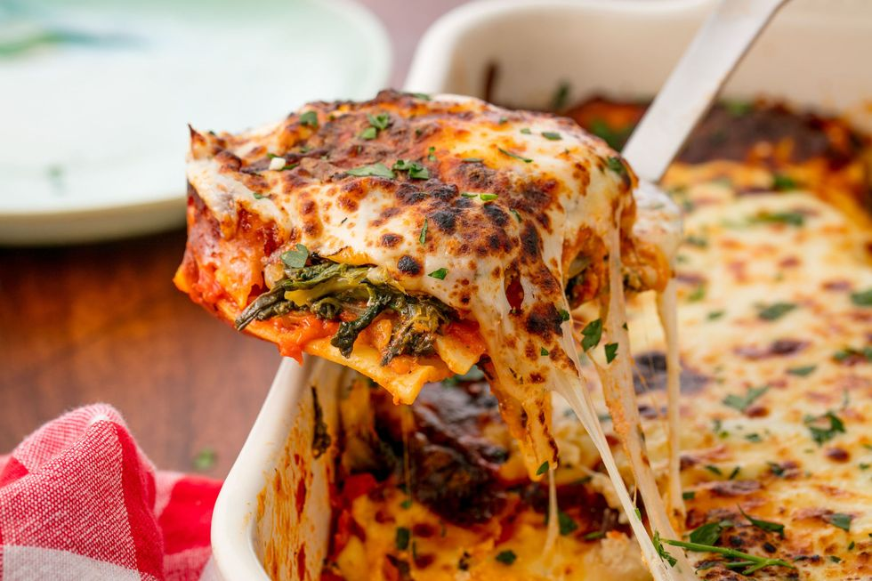

Spinach Lasagna

A to-die-for vegetarian lasagna!
This spinach lasagna is sure to hit that cozy comfort food itch we all crave come fall. Follow along as we prepare and execute a dish you'll surely keep with you for years to come!
Ingredients
- 1 tablespoon butter
- 24 ounces fresh spinach leaves
- 15 ounces ricotta cheese
- 2 eggs
- 3/4 cup grated Parmesan cheese
- 1 cup shredded mozzarella cheese
- 1/2 teaspoon salt plus more to taste
- 1/4 teaspoon pepper plus more to taste
- 1/2 teaspoon Italian seasoning
- 1 box lasagna noodles
- 24 ounce jar marinara sauce
- 2 cups shredded mozzarella cheese
- cooking spray
- 2 tablespoons chopped parsley
Steps
For the filling
- Melt the butter in a large pan over medium high heat. Add as much spinach as will fit in the pan and cook until it wilts. Continue adding handfuls of spinach to the pan until it's all wilted. Season with salt and pepper to taste.
- Let the spinach cool slightly, then squeeze the excess water out of the spinach. Coarsely chop the spinach.
- Place the spinach, ricotta, eggs, Parmesan, 1 cup mozzarella, salt, pepper and Italian seasoning in a large bowl. Stir to combine.
For assembly
- Cook the lasagna noodles according to package directions.
- Preheat the oven to 375 degrees F. Coat a 9"x13" pan with cooking spray.
- Spread a small amount of sauce on the bottom of the pan. Add a layer of noodles, then spread 1/3 of the cheese mixture over the noodles.
- Top the cheese mixture with 1/3 of the marinara sauce.
- Repeat the layers, ending with the marinara sauce.
- Cover the lasagna with foil, then bake for 45 minutes.
- Uncover the lasagna, then add the remaining 2 cups of mozzarella cheese. Bake for an additional 15 minutes or until cheese is melted and browned.
- Sprinkle lasagna with parsley. Let stand for 5-10 minutes, then cut into slices and serve.